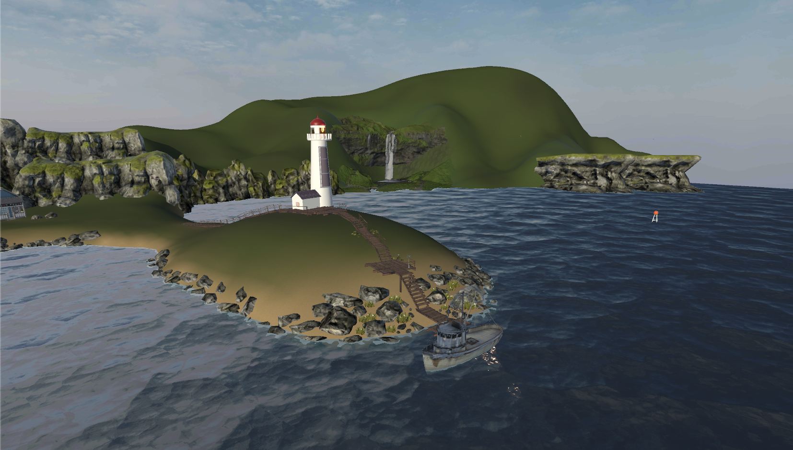
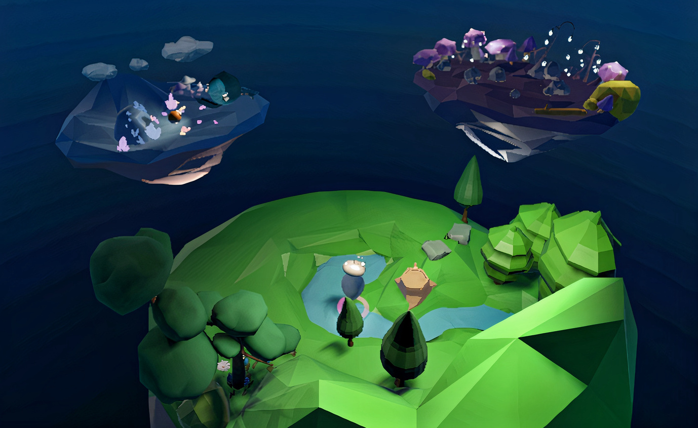
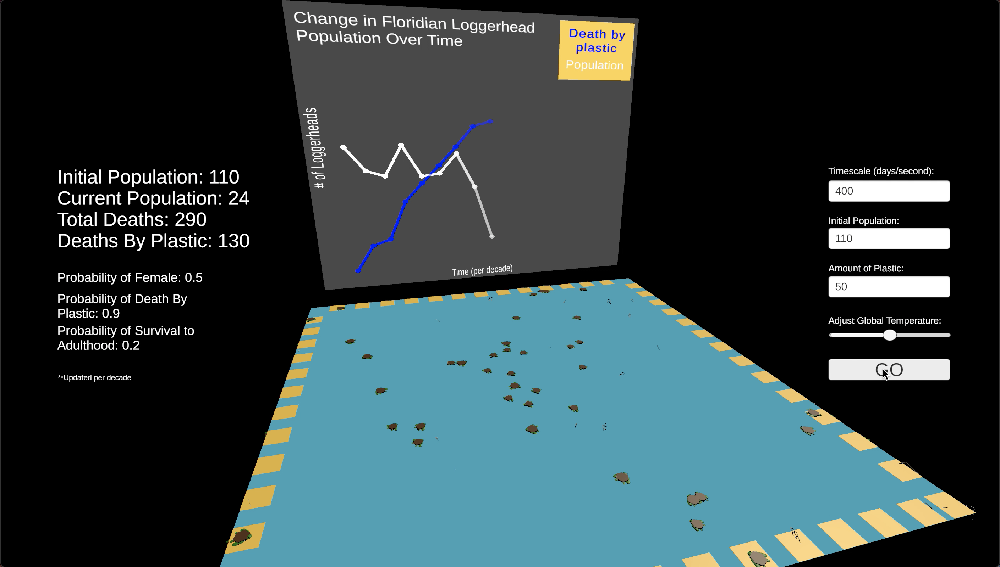
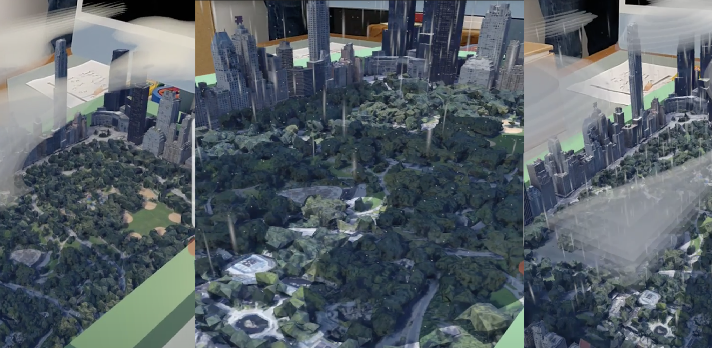
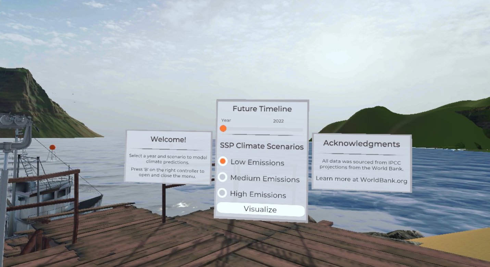
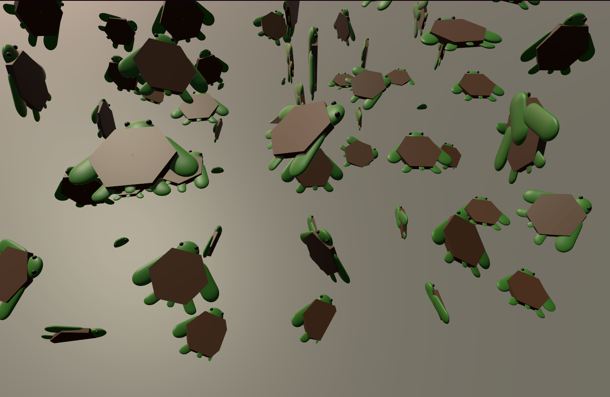
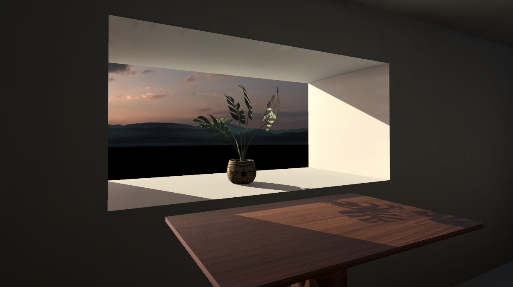
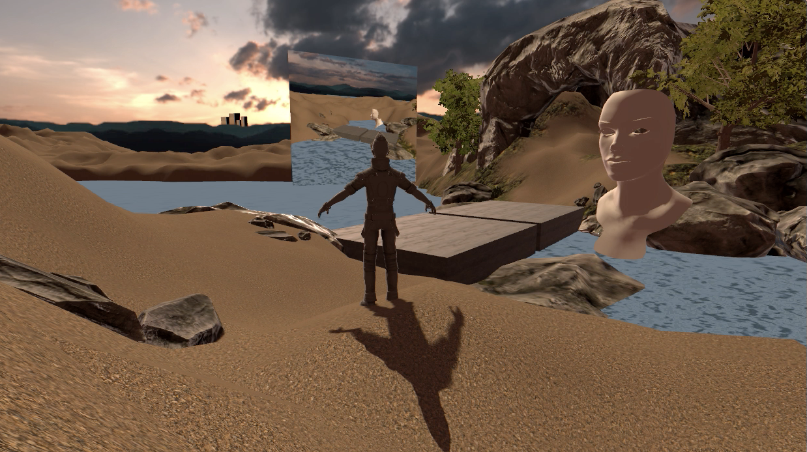
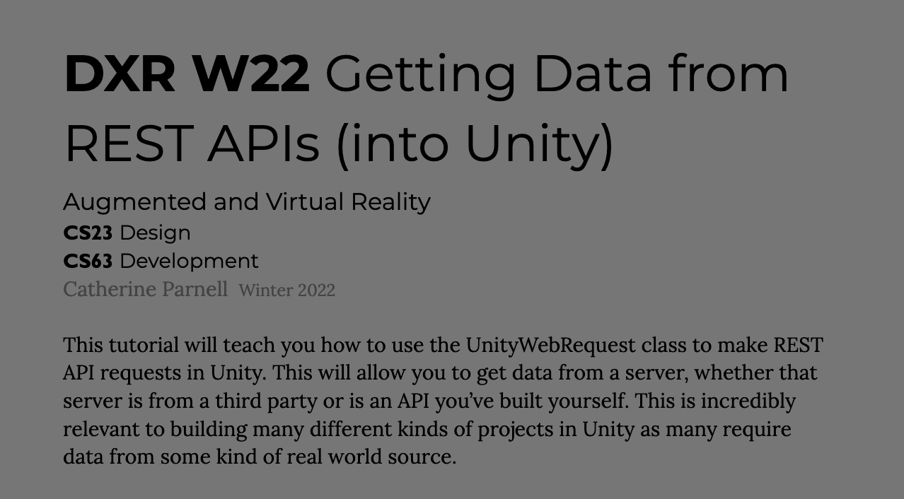

Climate Modeling in VR
This project was a fully immersive, VR-based data visualization tool for climate data that allows the user to 'experience' climate change.
Based on a given year and estimated pollution emission levels, three key data factors
(precipitation, temperature, and sea level rise) were taken from the World Bank Climate Change Knowledge Portal
through a custom-built deployed API to visualize the effects of climate change. I led the team of 4 developers and one designer,
pioneering our efforts on both full system and data integration, as well as UI elements.
Check out the demo here.

Interactive storytelling in VR
Our goal was to create an immersive story experience, where the user is at the heart of the narrative. YOU
have to help a robot retrieve the core energy orb of its planet to save the planet. I worked on this project with two designers,
and I was responsible for all scripting, integration, interaction and navigation.
Check out the demo here.

Floridian loggerhead ecosystem simulation in Unity
The goal of this project was to build an interactive simulation of Loggerhead populations based on various environmental factors.
Upon user input, the simulation makes a request to a Python Flask REST API that I
built in order to compute factually accurate timescales and retrieve real nesting
data pertaining to the highest density Florida beaches for loggerhead nesting from
the Florida Fish and Wildlife Conservation Commission REST API services.
Every beach simulates a real-life Florida beach, all key aspects of the sea turtle life
cycle are captured in code, and all times are computed to be proportional in timescale.
Check out the demo here.

NYC Historical Weather modeling in AR
This project aims to bring weather data to life using an interactive 3D model display of NYC.
Our goal with this project was to explore geographical space, combining real geographic and
weather data with the awesomeness of VFX/Unity effects. I built this with a partner, and was
responsible for data networking throughout our application from Weatherbit.io's
hourly weather data API, as well as the VFX effects and UI elements.
Check out the demo here.

VR UI/UX
User centered design is incredibly important. Particularly with 3D space being such an uncharted frontier,
good UI and UX are integral to VR. I spent a lot of time this term reflecting on what that might mean,
talking to potential users of my projects and creating projects with user centered elements to them. This UI,
built for VR Climate Modeling, was modified based off of Oculus Debug UI and designed in Figma.

Generative design
Beautiful art can be generated by just code.

Lighting
I learned a lot about light baking this course. Here's a bit of a peek into the process.

Animation, Materials & environment design
A demonstration of the best fundamentals Unity has to offer, terrain building, materials, and animation. See demo here.

API Construction and integration
I built two different Python Flask APIs and worked with UnityWebRequest to build data driven applications as part of my personal project for the course.
{kind=link}
{kind=link}
{kind=link}
{kind=link}
{kind=link}
{kind=link}
{kind=link}
{kind=link}
{kind=link}